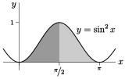
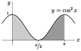

Subsection 1.8.1 Integrating \(\int \sin^m x\cos^n x\dee{x}\)
¶Subsubsection 1.8.1.1 One of \(n\) and \(m\) is odd
Consider the integral \(\int \sin^2x \cos x\dee{x}\text{.}\) We can integrate this by substituting \(u=\sin x\) and \(\dee{u}=\cos x \dee{x}\text{.}\) This gives
\begin{align*}
\int \sin^2x \cos x\dee{x} &= \int u^2 \dee{u}\\
&= \frac{1}{3}u^3+C = \frac{1}{3}\sin^3x +C
\end{align*}
This method can be used whenever \(n\) is an odd integer.
- Substitute \(u=\sin x\) and \(\dee{u}=\cos x\dee{x}\text{.}\)
- This leaves an even power of cosines — convert them using \(\cos^2x = 1-\sin^2x = 1-u^2\text{.}\)
Here is an example.
Start by factoring off one power of \(\cos x\) to combine with \(\dee{x}\) to get \(\cos x\dee{x}=\dee{u}\text{.}\)
\begin{align*}
\int \sin^2 x\cos^3 x\dee{x}
&= \int \underbrace{\sin^2 x}_{=u^2}\underbrace{\cos^2 x}_{=1-u^2}\ \underbrace{\cos
x\dee{x}}_{=\dee{u}} & \text{set $u=\sin x$}\\
&= \int u^2\ (1-u^2)\dee{u}\\
&=\frac{u^3}{3}-\frac{u^5}{5}+C\\
&=\frac{\sin^3x}{3}-\frac{\sin^5x}{5}+C
\end{align*}
Of course if \(m\) is an odd integer we can use the same strategy with the roles of \(\sin x\) and \(\cos x\) exchanged. That is, we substitute \(u=\cos x\text{,}\) \(\dee{u}=-\sin x\dee{x}\) and \(\sin^2 x=1-\cos^2x=1-u^2\text{.}\)
Subsubsection 1.8.1.2 Both \(n\) and \(m\) are even
If \(m\) and \(n\) are both even, the strategy is to use the trig identities 1.8.4 and 1.8.5 to get back to the \(m\) or \(n\) odd case. This is typically more laborious than the previous case we studied. Here are a couple of examples that arise quite commonly in applications.
Example 1.8.7 \(\int \cos^2 x\dee{x}\)
By 1.8.5
\begin{equation*}
\int \cos^2 x\dee{x}
= \frac{1}{2}\int \big[1+\cos(2x)\big]\dee{x}
= \frac{1}{2} \Big[x+\frac{1}{2}\sin(2x)\Big] + C
\end{equation*}
Example 1.8.8 \(\int \cos^4 x\dee{x}\)
First we'll prepare the integrand \(\cos^4x\) for easy integration by applying 1.8.5 a couple times. We have already used 1.8.5 once to get
\begin{gather*}
\cos^2 x = \frac{1}{2} \big[1+\cos(2x)\big]
\end{gather*}
Squaring it gives
\begin{gather*}
\cos^4 x = \frac{1}{4} \big[1+\cos(2x)\big]^2
= \frac{1}{4}+\frac{1}{2}\cos(2x)+\frac{1}{4}\cos^2(2x)
\end{gather*}
Now by 1.8.5 a second time
\begin{align*}
\cos^4 x &= \frac{1}{4}+\frac{1}{2}\cos(2x)+\frac{1}{4}\ \frac{1+\cos(4x)}{2}\\
&=\frac{3}{8}+\frac{1}{2}\cos(2x)+\frac{1}{8}\cos(4x)
\end{align*}
Now it's easy to integrate
\begin{align*}
\int \cos^4 x\dee{x}
&= \frac{3}{8}\int \dee{x}+\frac{1}{2}\int\cos(2x)\dee{x}+\frac{1}{8}\int\cos(4x)\dee{x}\\
&= \frac{3}{8}x+\frac{1}{4}\sin(2x)+\frac{1}{32}\sin(4x) + C
\end{align*}
Example 1.8.9 \(\int \cos^2x \sin^2x\dee{x}\)
Here we apply both 1.8.4 and 1.8.5.
\begin{align*}
\int \cos^2x \sin^2x\dee{x}
&= \frac{1}{4} \int \big[1+\cos(2x)\big] \big[1-\cos(2x)\big] \dee{x}\\
&= \frac{1}{4} \int \big[ 1-\cos^2(2x) \big] \dee{x}\\
\end{align*}
We can then apply 1.8.5 again
\begin{align*} &= \frac{1}{4} \int \big[ 1- \frac{1}{2}\left(1+ \cos(4x)\right) \big] \dee{x}\\ &= \frac{1}{8}\int \big[1 - \cos(4x)\big] \dee{x}\\ &= \frac{1}{8}x -\frac{1}{32}\sin(4x) +C \end{align*}Oof! We could also have done this one using 1.8.2 to write the integrand as \(\sin^2(2x)\) and then used 1.8.4 to write it in terms of \(\cos(4x)\text{.}\)
Example 1.8.10 \(\int_0^\pi \cos^2 x\dee{x}\) and \(\int_0^\pi \sin^2 x\dee{x}\)
Of course we can compute the definite integral \(\int_0^\pi \cos^2 x\dee{x}\) by using the antiderivative for \(\cos^2 x\) that we found in Example 1.8.7. But here is a trickier way to evaluate that integral, and also the integral \(\int_0^\pi \sin^2 x\dee{x}\) at the same time, very quickly without needing the antiderivative of Example 1.8.7.
Solution:
-
Observe that \(\int_0^\pi \cos^2 x\dee{x}\) and \(\int_0^\pi \sin^2 x\dee{x}\) are equal because they represent the same area — look at the graphs below — the darkly shaded regions in the two graphs have the same area and the lightly shaded regions in the two graphs have the same area.
 - Consequently,\begin{align*} \int_0^\pi \cos^2 x\dee{x} = \int_0^\pi \sin^2 x\dee{x} &= \frac{1}{2}\bigg[\int_0^\pi \sin^2 x\dee{x} +\int_0^\pi \cos^2 x\dee{x}\bigg]\\ &=\frac{1}{2}\int_0^\pi \big[\sin^2 x+ \cos^2 x\big]\dee{x}\\ &= \frac{1}{2}\int_0^\pi \dee{x}\\ &=\frac{\pi}{2} \end{align*}